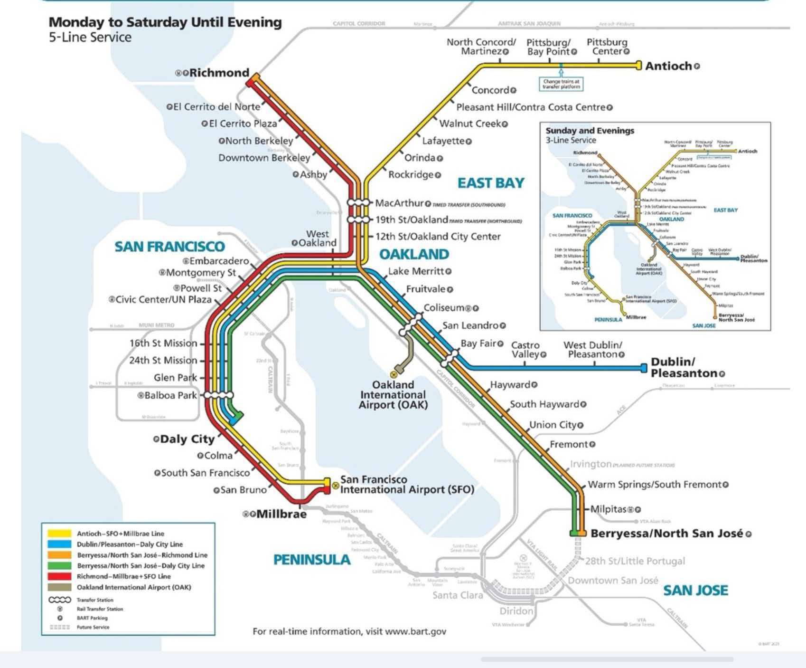

Background
The BART story began in 1946, not by governmental fiat but as a concept that gradually evolved at informal gatherings of business and civic leaders on both sides of San Francisco Bay. Facing heavy postwar migration and a resulting automobile boom, the leaders discussed ways to ease mounting congestion on the bridges spanning the bay.
In 1947, a joint Army-Navy review board concluded that another connection between San Francisco and Oakland would be needed to prevent intolerable congestion on the Bay Bridge. After years of work by stakeholders, BART began formal passenger service in 1972.
BART now has a 54-year history. Since the COVID-19 pandemic, the system has faced structural financial deficits, slow ridership recovery, and public safety concerns at stations and on trains. We interviewed local commuters to capture their views of the rail system.
Accessibility and Convenience
For many Bay Area residents, BART remains the most practical public transit option for traveling across the bay, especially for trips to the East Bay. Riders said taking BART helps them avoid chronic traffic congestion on the Bay Bridge, cuts cross-county commute times and eliminates the need to search for parking.
Many interviewees cited convenience and relatively low fares as BART's greatest strengths. They also described the system as user-friendly, noting that stations near their homes and destinations make travel more convenient.
If some stations close, the system's overall accessibility may decline, weakening the transit network's ability to serve local residents. The impact would depend on which stations close and each resident's transportation needs.
What Commuters Want
Many riders said BART has upgraded its facilities and improved overall cleanliness in recent years. Even so, cleanliness and safety remain the two areas they most want the agency to improve. They suggested increasing the visible security presence at stations and on trains to better protect passengers.
Commuters also want BART to increase train frequency. Office workers specifically said trains can run infrequently during morning rush hours and that more frequent service would increase the system's value for daily travel.
Several interviewees acknowledged, however, that BART's ongoing financial deficit makes such service expansions difficult at present.
The Road Ahead
In the public's ideal vision, BART should continue technological upgrades to reduce unplanned service suspensions and equipment malfunctions. Residents said they want the rail network to extend throughout the Bay Area, reducing reliance on private cars while providing affordable, inclusive transit access to local communities.
Riders said they hope BART can establish a sustainable financial framework with greater government funding. Many are pinning their hopes on the regional transit ballot measure scheduled for a vote in November, seeking more stable government funding.
Without consistent financial support, however, BART may struggle to build the comprehensive, resilient rail network spanning the Bay Area that residents envision.
Average Daily Station Ridership
Browse weekday ridership for all 49 BART stations. Use the arrows, swipe, or the dropdown to explore station-level throughput alongside the full network map.
